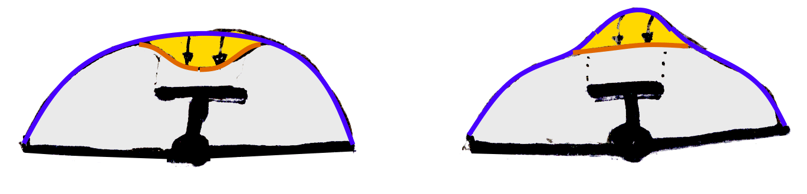
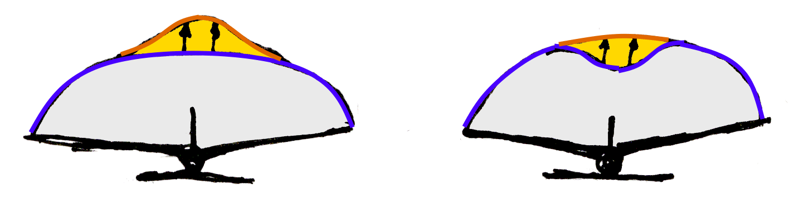

Canard aircraft ( like pusher propellers ) have a special appeal to the "inventor" type of person. The canard aircraft has that special quality where its proponents are baffled by the obtuseness of those who fail to see its obvious superiority.
Canards are "invented" every two decades or so with clockwise regularity, and they attract funding and lifelong enthusiasms with the same alarming regularity.
The argument for the canard goes like this. Wings have induced drag, because of their lift. Stabilizers are small wings which create a down force, which creates induced drag by itself, and it also increases the lift required of the main wing, increasing induced drag again. So, we pay for the stabilizer lift twice.
By putting the stabilizer at the front instead of at the rear, it contributes to the lift instead of detracting from it, and so a canard reduces induced drag.
The argument is false for at least the following reasons :
- a normal stabilizer ( especially at aft CG ) may well give positive or zero lift, except at very high speed.
- the induced drag of oppositely lifting surfaces will largely cancel, not add.
Before we give the details, we will first discuss some practical disadvantages of the canard layout.
The canard layout is awkward for a number of reasons. Aerodynamically, the canard surface tends to be more complex than a stabilizer, carrying more load and needing more complex high lift devices. Also, it does not eliminate the need for a tail, since a vertical fin at some distance from the CG is needed anyway.
Structurally, the canard sits in front of the cockpit. This is a crowded area and a discontinuity in the fuselage structure, especially in smaller aircraft. The canard surface may also get in the way of the pilot's view.
Admittedly, if we can normally hang an engine from the firewall, then we can probably also accommodate a canard plane there. But there are other practical problems.
The canard seems to lead to a preference for pusher engines. In single engined airplanes, an engine ahead of the canard is often not practical from a weight and balance perspective. In twins, tractor propellers will get in the way of the cabin access doors, leading to pusher arrangements with propellers aft of the wing trailing edge.
Pusher propellers are surprisingly noisy and inefficient, but that is a story in itself. At the very least, pusher installations invariably have cooling problems, and require complicated and heavy drive shaft extensions.
In all cases, adding a long aft fuselage just to carry a fin seems wasteful, and in a single engined tail pusher it is not even possible. This leads to the use of wing tip fins on swept back wings. Swept back wings are very inefficient, obviating any advantage the canard might have had.
The wing tip fins will still have a short moment arm, and since yaw damping goes with the square of the moment arm, these designs have a serious Dutch roll problem, sometimes solved by an extra front fin.
In a normal aircraft, the main wing can be taken right up to the stall for maximum lift. In a canard, this would be very dangerous. The canard surface will need to stall first. This limits the maximum lift of canard aircraft, needing more wing area and thus creating more drag. Sweptback wings need even more area for the same lift, and to make matters worse they have very poor stalling characteristics.
If ony because of the practical problems, the canard layout is highly undesirable. For reasons of intellectual curiosity, it is still interesting to examine whether the original claims in its favour hold water, which they do not.
The mechanism of induced drag was discovered by Prandtl and his coworkers, in particular by Max Munk around 1917, and they gave it its name.
Briefly, a wing tramples down air to stay aloft. By Newton's law, an upward force on the wing creates a downward force on the air it passes over, and this accelerates the air down. By an energy argument, the most efficient wing is the one that accelerates the largest possible quantity of air with the lowest possible velocity.
Due to the quadratic nature of the kinetic energy, the most efficient downward velocity distribution is an even one, with no peaks and troughs. The downwash velocity must be the same all along the span. From a vortex argument, the corresponding distribution of the lift across the span is elliptical.
This lift distribution by the way is by no means obvious, and it caught Prandtl and his coworkers somewhat by surprise.
By the same energy argument, the only downwash that matters is the one downstream of the whole system of wings and fuselage, because this is the kinetic energy that is left behind in the atmosphere. This means that the details at the airplane do not really matter. We can have five wings in a row, or a single one five times as large. At some distance behind the airplane, the effect is the same.
Munk derived this first for the case of biplane wings which are not directly above each other, but staggered slightly in the lengthwise direction, as was often the case for biplanes of the period, and this is why it is called "Munk's stagger theorem".
Because potential theory is a linear theory for small deflection angles, the wake is simply deflected by the sum of the action of wings which are close enough together to be considered "in the same plane" in the wake, relative to the span of the wings. To a first approximation, this simple addition also holds for any system of canards, wings and tailplanes which follow each other roughly in the same plane, even if they are "staggered" by a considerable streamwise distance.
This rosy picture is disturbed a little by the fact that the initially flat downwash of a wing tends to curl up under its own action into two concentrated "tip" vortices downstream, so the vertical velocities no longer simply add over the span. But to a first approximation it is true.
Suppose the wing itself does not have an even downwash, but that there is an extra downward "bump" in the middle. If the stabilizer has a downward lift which creates a similarly shaped "upwash" bump, then the overall effect far behind the airframe is an even downwash after all. The overall lift distribution will be elliptical.
There are definitely some if's and but's. The wake plane curls itself up, so the compensation is not perfect. And there may be some extra viscous drag where the surfaces generate lift, although this effect tends to be minor in the design range. But by and large, the extra induced drag due to the uneven downwash of the wing is recovered.
It is definitely not true that the induced drag of the stabilizer and the wing add. Instead, they tend to cancel.
Another interesting way of looking at this is that the stabilizer "sails" in the center downwash of the main wing. In turning the downflow of the wing to the rear again, it generates a thrust which exactly cancels the induced drag "bump" at the center of the wing.
In a separate section on trim, we will examine the forces on the stabilizer in stable, trimmed flight. Briefly, the result is that it is relatively easy and common to design in such a way that for some design speed, the force on the stabilizer is zero. There will then be a down force for the higher speeds, and an up force for the lower ones.
However, it is also not uncommon to have a down force on the stabilizer in the cruise condition, and this is the case that the canard proponents object against. But this does not have to be a bad thing.
Figure 1 shows two cases. On the left hand side, we have an elliptical wing, with a more or less elliptical stabilizer lift subtracted from it. The overall lift distribution is not elliptical, and it will not be optimal. How bad this is, is another matter, but let us assume that we do not want it.
The right hand side shows what happens if the lift of the main wing is adapted by some extra lift on the center section. This is very easy to do. In fact, it is structurally more efficient to have some extra chord and depth there, and many wings have an extra tapered section or fairing towards the fuselage already for this and other reasons.
The stabilizer subtracts the extra lift again, reclaiming the energy in the excess downwash. The net result is an optimal, elliptical distribution. This is an elegant and simple solution.

Figure 1 : Stabilizer lift added to wing lift.
The section on trim also finds the forces on a canard. These are always positive ( up ), certainly at high speed or zero lift, to counter the wing section zero lift moment. Even at very low speed the canard force must always be positive, since in a canard layout the aircraft AC, and even more so the aircraft CG, always lie ahead of the main wing so the canard always has to lift its part of the aircraft weight.
Figure 2 shows what happens when the canard and the main wing combine. The left hand side shows an elliptical wing combined with a more or less elliptical canard. Like in the case of the stabilizer, the overall distribution is not elliptical, and hence not optimal. The deviation from optimal is similar to the case of the stabilizer.
The right hand side shows what happens if we attempt to optimize the overall distribution by reshaping the lift of the main wing. In this case, we need to decrease the lift on the center section. The wing will need an inverse taper, becoming narrower and thinner at the root. This is highly undesirable from a structural point of view, to the point of begin downright impractical.
In short, in a canard layout it is impossible to create an elliptical overall loading. The induced drag will be always be higher than for a properly designed stabilizer. This should put an end to any remaining illusions about a possible advantage for the canard layout.

Figure 2 : Canard lift added to wing lift.